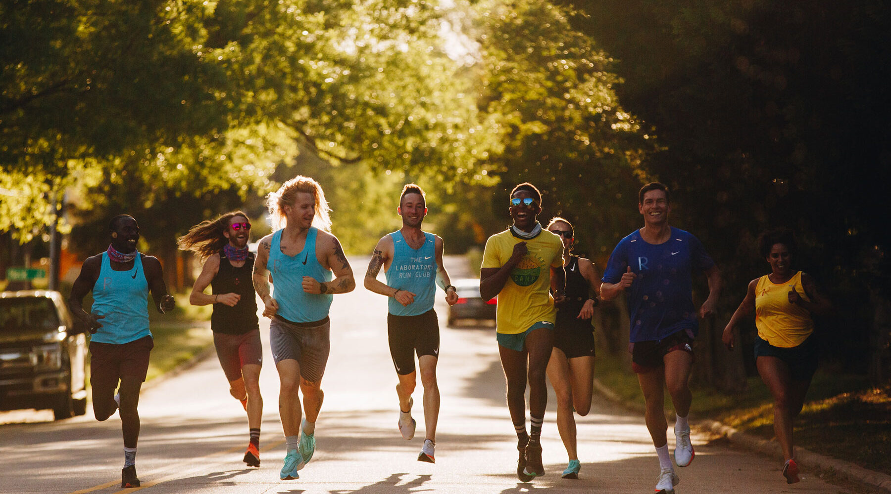
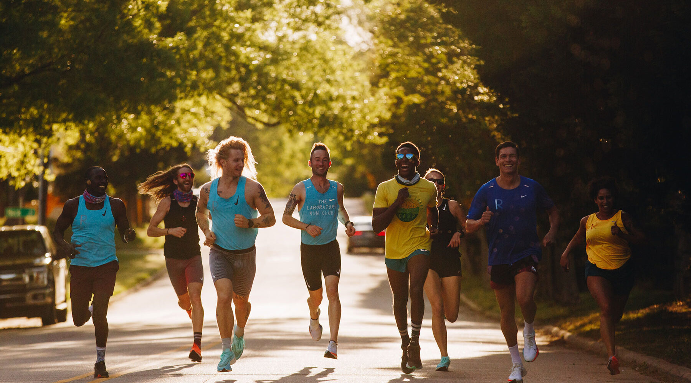

Gruppe Fitness
Hvad er Gruppe Fitness?
Gruppe fitness refererer til organiserede træningssessioner, der ledes af en professionel instruktør, hvor deltagerne udfører øvelser i en gruppe. Disse klasser kan variere i intensitet, format og fokus, og de tilbyder et bredt udvalg af træningsmetoder, der passer til forskellige fitnessniveauer og mål.
Typer af Gruppe Fitnessklasser
Der er mange forskellige typer af gruppe fitnessklasser, der spænder fra høj-intensitet træning til mere afslappende og rehabiliterende øvelser. Nogle populære former inkluderer Zumba: En sjov danseklasse, der kombinerer latin musik og bevægelse for at få pulsen op og forbrænde kalorier. Body Pump: En styrketræningsklasse, hvor deltagerne bruger vægte til at udføre en række øvelser for hele kroppen. Yoga: En klasse, der fokuserer på strækning, balance og åndedrætsøvelser for at forbedre fleksibilitet og mental velvære. Pilates: Fokuserer på kernestyrke, stabilitet og kontrol gennem præcise bevægelser. HIIT (High-Intensity Interval Training): En intensiv træningsmetode, der involverer korte bursts af høj-intensitetsøvelser efterfulgt af korte hvileperioder. Cykeltræning: Indoor cycling-klasser, der simulerer cykelture med forskellige intensiteter og motiverende musik.
Fordele ved Gruppe Fitness
Motivation og Støtte: At træne i en gruppe kan skabe en følelse af samhørighed og støtte. Deltagerne motiverer hinanden, hvilket kan gøre det lettere at overkomme barrierer og holde sig til træningsprogrammet. Struktureret Træning: Gruppe fitnessklasser tilbyder en struktureret tilgang til træning, hvor en erfaren instruktør planlægger og leder sessionerne. Dette kan være særligt nyttigt for begyndere, der måske har svært ved at sammensætte deres egen træningsrutine. Social Interaktion: At træne med andre kan føre til nye venskaber og sociale forbindelser. Det kan gøre træningen sjovere og mere tilfredsstillende, hvilket kan føre til øget motivation for at deltage i klasserne regelmæssigt. Variation i Træningen: Gruppe fitnessklasser tilbyder ofte forskellige træningsformer og intensitetsniveauer, hvilket kan hjælpe med at holde træningen interessant og udfordrende. Variation i træningen kan også bidrage til at undgå stagnation og fremme resultater. Forbedret Teknik: Instruktører i gruppe fitnessklasser kan give feedback og vejledning til at hjælpe deltagerne med at udføre øvelserne korrekt, hvilket reducerer risikoen for skader og forbedrer resultaterne.
Tips til at Komme i Gang med Gruppe Fitness
Vælg det rigtige niveau: Find en klasse, der passer til dit nuværende fitnessniveau, så du kan føle dig komfortabel og tryg, mens du træner. Vær åben for nye oplevelser: Prøv forskellige klasser og instruktører for at finde ud af, hvad du nyder mest. Dette kan hjælpe dig med at holde motivationen oppe. Tag en ven med: At deltage i gruppe fitness sammen med en ven kan gøre oplevelsen sjovere og mere motiverende. Sæt mål: Sæt realistiske mål for din træning, uanset om det er at forbedre din styrke, tabe dig eller opbygge mere fleksibilitet. .
 
